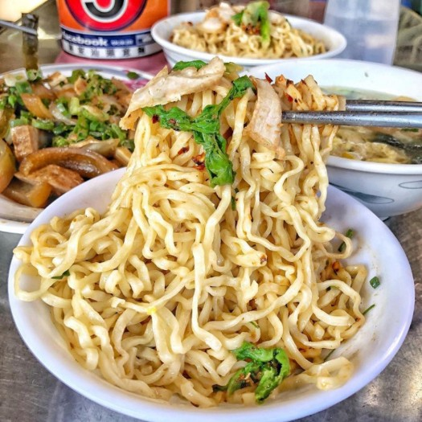
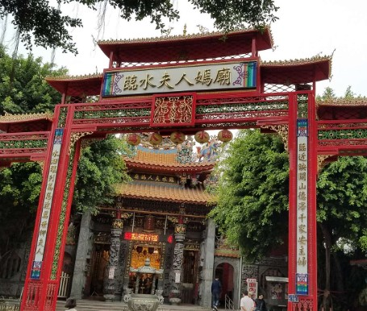
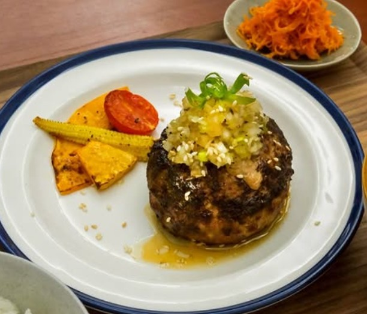
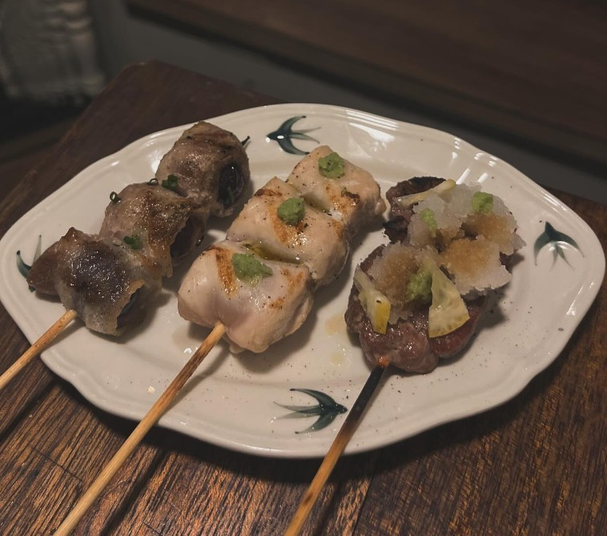
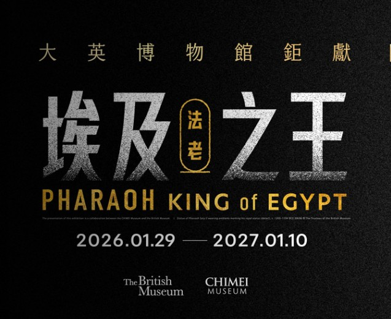

第
一
日
5/23 (六)
09:00
啟程台南
搭乘高鐵抵達台南，感受南國陽光，租借機車準備展開旅程。
10:30

午餐．陳家汕頭麵
📍 導航當年回馬槍一吃成主顧，用汕頭乾麵開始完美的旅程！再熱都要吃！不管啦~
11:30
住宿放行李
前往 Provintia Hotel 天下南隅 辦理手續，放下行囊，輕裝上陣。
13:00

開基臨水夫人媽廟
📍 導航臨水夫人護佑初生嬰兒及保佑產婦的平安，是台灣最古老的祝禱順產育嬰的廟！為好朋友祈求孕期與生產順利~
17:00

晚餐．和洋亭真夏
📍 導航復古和風氛圍中，品嚐多汁醇厚的日式漢堡排，結束完美的第一天。
第
二
日
5/24 (日)
白天
自由探索
府城漫遊，探索未知的巷弄小店與咖啡館... (待安排)
18:00

晚餐．蕪麦酒食
📍 導航華燈初上，在日式居酒屋中小酌，品嚐串燒，聊聊旅途趣事。
第
三
日
5/25 (一)
上午

奇美博物館．埃及展
📍 導航與大英博物館共同合作，匯聚280件作品，是歷年埃及法老文物來臺規模之最！
特別推薦2樓的VR沉浸探險【消失的法老】：完整還原最大、最古老的「古夫金字塔」，深入探訪解鎖金字塔內的神祕禁區。線上預售票$680/人，奇美博物館官網獨賣。
下午
滿載賦歸
帶著滿滿的台南回憶與照片，搭乘高鐵返回溫暖的家。